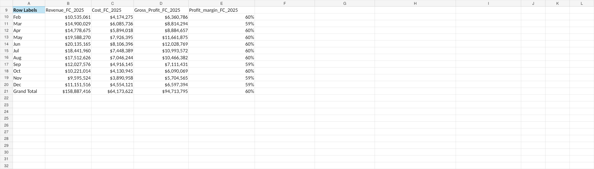
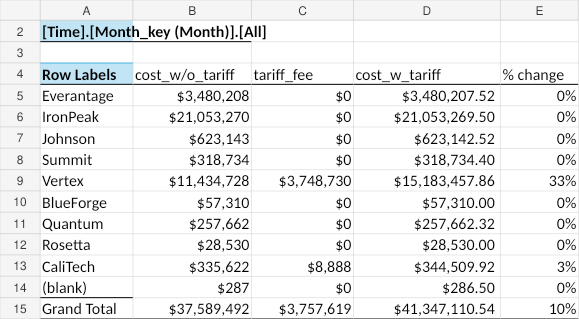

FP&A · Tariff Analysis · Vendor Strategy
An FP&A case evaluating how changing U.S. tariffs affect sourcing costs, gross margin, inventory decisions, and vendor strategy.
The problem & context
The case required evaluating how tariff changes would flow through procurement costs and profitability while the business still needed enough inventory to meet forecast demand. The analysis also had to distinguish vendor-specific exposure, since tariff timing and rates differed across suppliers.
My role
I built and analyzed the Excel model linking forecast demand, inventory, purchase requirements, vendor sourcing, tariff fees, COGS, and gross profit. I used the output to identify where tariff exposure was concentrated and frame sourcing / inventory recommendations.
Methodology
Link demand forecasts and ending inventory to purchase requirements rather than treating tariffs as a standalone cost.
Apply vendor- and date-specific tariff assumptions to purchase activity to isolate the cost impact.
Translate changes in procurement cost into COGS, gross profit, margin, and practical sourcing recommendations.
Model evidence


Key findings
The executive summary projects approximately $158.9M of revenue, $64.2M of COGS, and $94.7M of gross profit across the 2025 forecast period.
In the vendor-impact view, Vertex showed the largest tariff burden in the displayed scenario, with cost increasing about 33%, while CaliTech showed a smaller increase in that snapshot.
AI-assisted workflow
AI was used to help structure the scenario logic, sanity-check the business interpretation of tariff changes, and sharpen the wording of recommendations. The tariff calculations themselves remained formula-driven in Excel.
Example prompts used for structured thinking:
What is the clearest way to connect tariff changes to COGS, inventory requirements, and gross margin in an FP&A model?Given these vendor-level tariff impacts, what business risks should be highlighted without overstating the model results?AI was used as a support and quality-control tool; calculations and final conclusions were checked against the underlying model.
Outcome / achievement
Produced an integrated FP&A workbook that turns vendor-level tariff assumptions into a financial view of revenue, COGS, margin, and sourcing exposure — making the analysis usable for planning decisions rather than just cost calculation.
Supporting files
The page is designed so a recruiter can understand the project without downloading anything. The original Excel workbook is still available for deeper review.